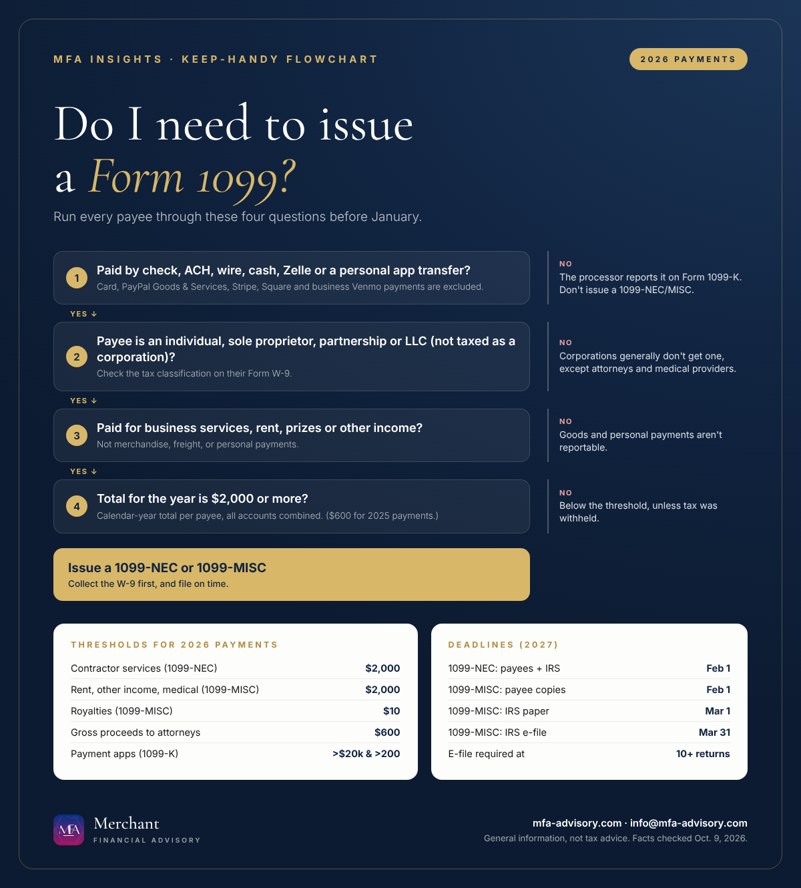

Executive summary
- New threshold: For payments made in 2026, you generally issue a 1099-NEC or 1099-MISC only when you pay someone $2,000 or more in the year. It was $600 for 2025 payments.
- Payment method matters: Card, PayPal Goods & Services, Stripe and Square payments are reported by the processor on Form 1099-K, not by you.
- Deadlines: 1099-NEC is due to contractors and the IRS by Feb. 1, 2027, with no automatic extension.
- E-filing changes: The IRS FIRE system shuts down. For the 2027 season, file through IRIS or an approved provider such as QuickBooks.
Bottom line: Collect W-9s now and sort 2026 contractor payments by method and the new $2,000 threshold, so your 1099-NECs are ready for Feb. 1, 2027.
If you pay contractors, landlords or other vendors, Form 1099 season starts long before January. For payments made in 2026, the rules changed in an important way: the One, Big, Beautiful Bill raised the reporting threshold for most 1099-NEC and 1099-MISC payments from $600 to $2,000. Fewer forms, yes, but also more room for mistakes if your vendor records aren't clean. This guide is adapted from the procedure we use with our own clients.

What changed for 2026: the new $2,000 1099 threshold
- $2,000 threshold. Nonemployee compensation (1099-NEC), rents, medical and health care payments, and other income (1099-MISC) are now reportable at $2,000 or more for tax years beginning after 2025. The amount may be adjusted for inflation starting in 2027.
- Some thresholds didn't move. Royalties are still reportable at $10, and gross proceeds paid to an attorney (for example, settlement funds) are still reportable at $600.
- Form 1099-K is back to $20,000. Payment apps and card processors report only when a payee has more than $20,000 in payments and more than 200 transactions.
- FIRE is retiring; IRIS takes over 1099 e-filing. The last day to file through the IRS FIRE system is Nov. 19, 2026. After Jan. 1, 2027, the IRS IRIS system is the only IRS electronic option for information returns, so plan for IRIS 1099 e-filing or use an approved provider such as QuickBooks.
- E-filing is mandatory at 10 returns. If you file 10 or more information returns in total (1099s and W-2s combined), you must e-file.
Who needs a 1099? The three-part test for every payee
Before you look at a dollar amount, run each vendor through three questions:
- Tax classification. Individuals, sole proprietors, partnerships and single-member LLCs generally get a 1099. C and S corporations generally don't. The big exceptions are attorneys and medical providers, who get one even if incorporated. The vendor's Form W-9 tells you which box they checked.
- Nature of the payment. Services, rent, prizes and other business income are reportable. Merchandise, freight, storage, telephone and similar items, accountable-plan reimbursements, and personal payments are not.
- Calendar-year total, by payment method. Add up everything you paid the vendor from Jan. 1 to Dec. 31 across all accounts, but only count payments you made by check, ACH, wire, cash, Zelle or a personal peer-to-peer transfer.
Which payments count (and which don't)
| Payment type | Form | 2026 threshold |
|---|---|---|
| Contractor services | 1099-NEC | $2,000+ (consultants, freelancers, virtual assistants, bookkeepers, cleaning, repairs) |
| Attorney fees | 1099-NEC | $2,000+, even if the law firm is a corporation |
| Rent | 1099-MISC | $2,000+ (office, warehouse, equipment). Not required if paid to a real estate agent or property manager. |
| Medical & health care | 1099-MISC | $2,000+, even if the provider is incorporated |
| Prizes, awards, other income | 1099-MISC | $2,000+ |
| Royalties | 1099-MISC | $10+ |
| Gross proceeds to attorneys | 1099-MISC | $600+ |
| Federal tax withheld | NEC / MISC | Any amount, if backup withholding applied |
PayPal, Venmo and the 1099-K threshold: the most common 1099 mistake
Card payments and "goods and services" payments through PayPal, Stripe, Square or a business Venmo or Cash App profile are reported by the processor on Form 1099-K, so you don't issue a 1099-NEC for those amounts. But personal transfers inside those same apps (PayPal Friends & Family, personal Venmo or Cash App, Apple Cash) and Zelle payments are still your responsibility to report. Never exclude a whole PayPal or Venmo account by default; look at how each payment was sent.
1099 filing deadlines for 2027 (for 2026 payments)
| Form | To recipient | To the IRS |
|---|---|---|
| 1099-NEC | Feb. 1, 2027 | Feb. 1, 2027 (paper or e-file; no automatic extension) |
| 1099-MISC | Feb. 1, 2027 (Feb. 16 if reporting in box 8 or 10) | Mar. 1, 2027 on paper, Mar. 31, 2027 e-filed |
The usual Jan. 31, Feb. 15 and Feb. 28 dates fall on a weekend or holiday in 2027, so they roll to the next business day. Check your state's filing requirements too. Many states, including New Jersey, have their own rules.
How to prepare 1099s in QuickBooks Online, step by step
- Reconcile everything through Dec. 31. Bank, cash and payment-app wallet accounts. Every transaction needs a real payee: record the actual vendor, not "Zelle" or "Venmo". Clear Uncategorized Expense.
- Export the year's transactions. Run a transaction report for Jan. 1–Dec. 31 on bank, cash and P2P accounts only (leave out credit cards and processor accounts). Export to Excel (XLSX), not CSV, so the Split column survives.
- Build a pivot table. Rows: vendor name, then expense account (Split). Values: sum of amount. Payments export as negatives, so a conditional-format rule of "less than -1,999.99" highlights everyone over the 2026 threshold.
- Fix blank vendors. Drill into any unnamed amounts in accounts like Contract Labor, Legal & Professional, Repairs or Rent, assign the vendor in QuickBooks, and refresh.
- Mark each payee Y / N / ? using the three-part test. Anything uncertain gets a "?" and a second look.
- Confirm W-9s are on file for every "Y" payee, and request the missing ones in one consolidated list.
- Update vendor records to match the W-9: legal name, address, tax ID, and the "Track payments for 1099" box. Then map each expense account to the right form and box.
- Review, then e-file through QuickBooks' 1099 e-file service or IRIS. Reconcile 1099 totals back to your pivot, furnish recipient copies on time, and keep the confirmations and W-9s.
Year-round habits that make January easy
- The best way to collect W-9s: get one before the first payment to any new vendor. It must show legal name, address, tax classification, TIN, signature and date.
- Monthly: add new vendors, request W-9s, and make sure every transaction has a payee.
- Quarterly: review the vendor list for 1099-eligible payees and merge duplicate vendor records.
- Split mixed bills. Separate services from materials and reimbursements so only reportable amounts land on the 1099.
- If a vendor won't give you a TIN, backup withholding at 24% applies to future reportable payments.
What it costs to get it wrong
Penalties apply per form, and separately for failing to file with the IRS and failing to give the recipient their copy. For information returns due in 2026:
| Filed or corrected | Penalty per return |
|---|---|
| Within 30 days of the due date | $60 |
| 31 days late through Aug. 1 | $130 |
| After Aug. 1, or not filed | $340 |
| Intentional disregard | $680 minimum |
Amounts for returns due in 2027 are adjusted for inflation each year. A paper filing when e-filing was required counts as not filed.
FAQs
For payments made in 2026, Forms 1099-NEC and 1099-MISC are generally required when you pay a vendor $2,000 or more during the year. Royalties ($10) and gross proceeds paid to attorneys ($600) keep their lower thresholds.
Usually yes, if the LLC is a single-member (disregarded) LLC or taxed as a partnership. If the LLC has elected to be taxed as a C or S corporation, generally no, unless it provides legal or medical services. Its Form W-9 shows the classification.
Not for goods-and-services or business-profile payments; the app reports those on Form 1099-K. Personal (Friends & Family) transfers and Zelle payments for business services are still yours to report if they reach the threshold.
Monday, Feb. 1, 2027, both to the contractor and to the IRS. There's no automatic extension for Form 1099-NEC.
Save the key dates
- Mon, Feb 1, 2027Form 1099-NEC due to contractors and the IRS For 2026 payments of $2,000 or more. No automatic extension.
Add to calendar
Subscribe to every MFA key date
"Add all these dates" downloads one file that opens in Apple Calendar, Outlook or Google Calendar (in Google, use Settings, then Import). Subscribing works with Apple, Google and Outlook and updates itself whenever we publish a new deadline.
Get key tax dates and new articles by email
Every new MFA Insights article, the IRS, New Jersey and New York deadlines that matter, and a calendar you can save. For individuals and small and mid-sized businesses.
Almost done: check your inbox and click the confirmation link to join MFA Insights. (If you don't see it in a minute, check Promotions or Spam.)
Have a question about this?
Ask us privately. Your question goes straight to our inbox, not onto the page, and we reply by email within one to three business days. Please don't include Social Security or account numbers.
Thanks, your question is in. We'll reply by email within one to three business days.
Sources
- IRS: Instructions for Forms 1099-MISC and 1099-NEC (12/2026)
- IRS IR-2025-107: Form 1099-K threshold reverts to $20,000 under the One, Big, Beautiful Bill
- IRS: FIRE system retirement (move to IRIS)
- IRS: Information return penalties
- IRS: Backup withholding
- IRS: Form W-9, Request for Taxpayer Identification Number and Certification
Facts checked against the sources above as of October 9, 2026. This article is general information, not tax, legal, or financial advice, and reading it does not create a client relationship. Tax rules change and every situation is different; confirm the details for your situation with a qualified professional before acting.